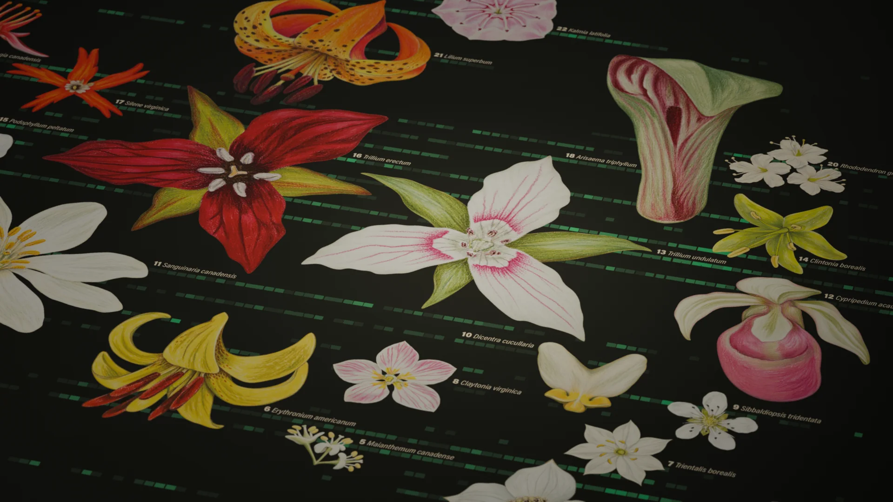
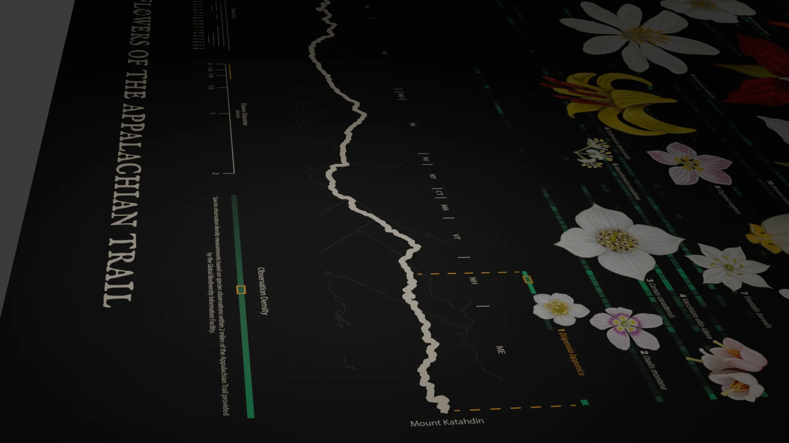
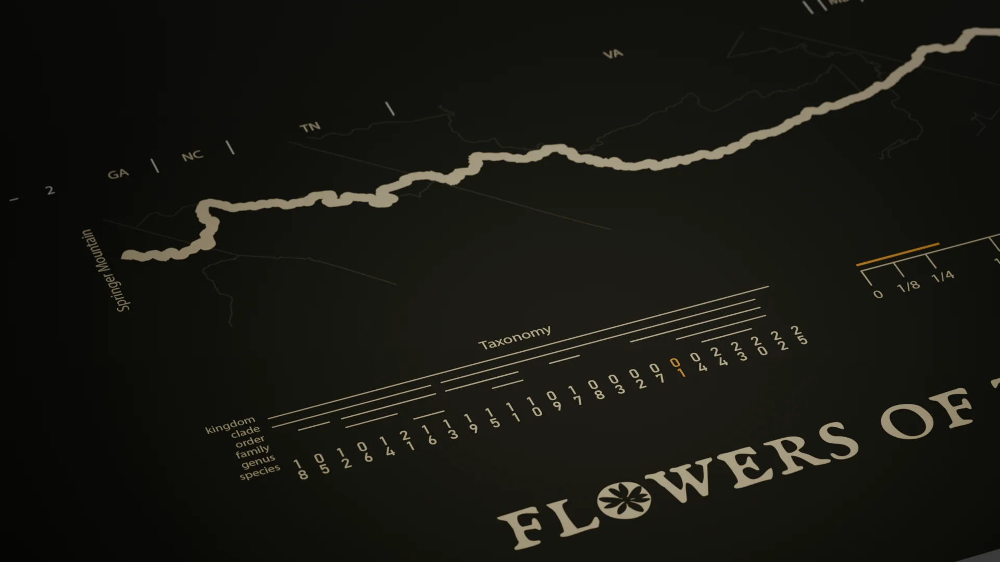
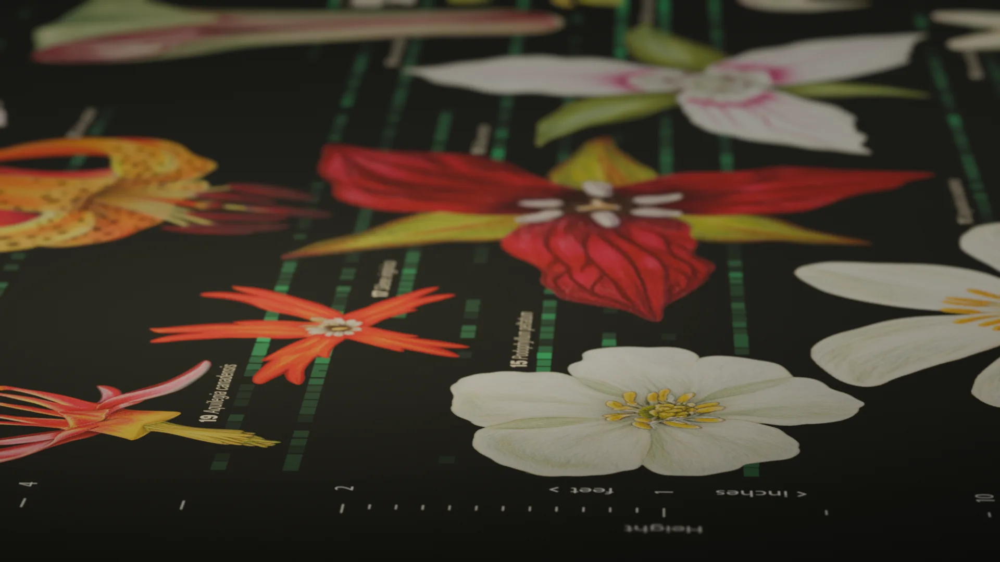
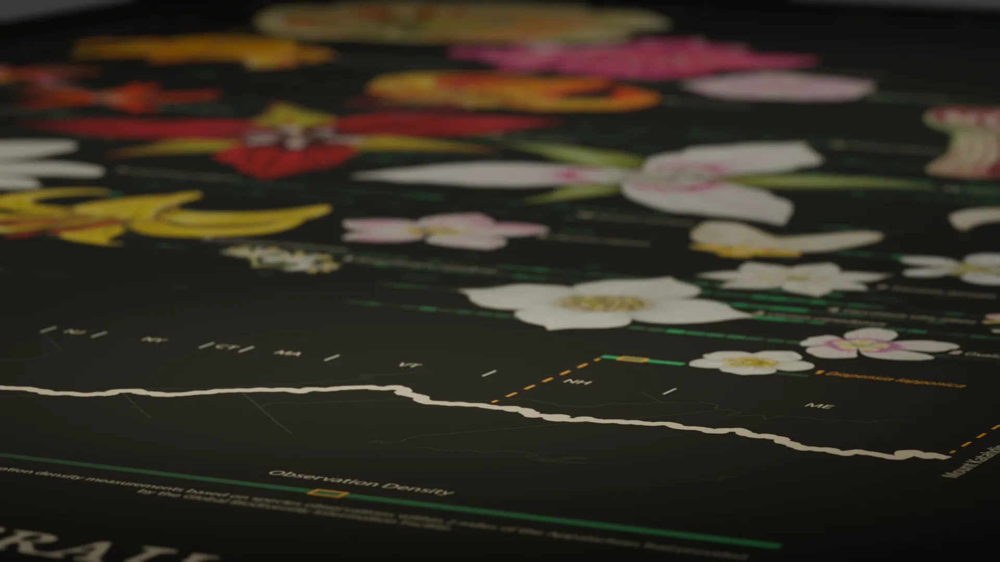

The poster
25 figures
Every flower on the poster is drawn by hand, then set into a chart built from real observation data. It's meant to reward a close look: scroll to explore the details.
Data illustration · Poster
Twenty-five hand-drawn wildflowers, plotted by height against a map of the trail from Georgia to Maine, with GBIF observations showing where along the way each one grows.
The poster
Every flower on the poster is drawn by hand, then set into a chart built from real observation data. It's meant to reward a close look: scroll to explore the details.
The x-axis
Along the bottom, the Appalachian Trail runs from Springer Mountain in Georgia to Mount Katahdin in Maine, with each state marked. Everything above it lines up to a position on the trail.
The rows
Each row is one species. Its segments show population density along the trail, from species observations within 2 miles of it, provided by the Global Biodiversity Information Facility. Brighter green means more observations.
Reading one row
The smallest flower on the poster, highlighted in orange. Its row only appears at the far north end, and dashed lines drop to the map to show where: New Hampshire and Maine.
The y-axis
The vertical axis is plant height on a doubling scale, from inches at the bottom to 128 feet at the top. The 25 species climb it in order, from Diapensia lapponica near the ground to the tulip tree, one of North America's tallest trees.
The top row
The tulip tree sits at the top of the height scale. Its row starts in Georgia and fades out partway north, around New York.
The illustrations
Each species is a hand-drawn illustration, here Lilium superbum, the Turk's cap lily. The drawings were composed with the ArcGIS Pro data layers in Illustrator.
The legends
A taxonomy tree groups the 25 species from kingdom down to species, a scale gives each flower's diameter in inches, and a ramp reads out population density. Diapensia lapponica stays orange in all three to orient the reader in the keys.
Rendered mockups of the finished poster.




